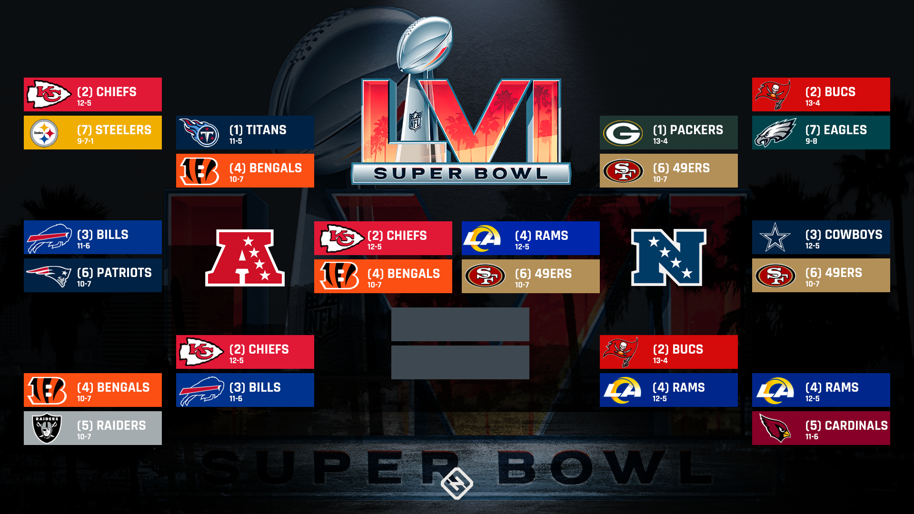

As of last night there are only four teams left in competition of the 14 teams that made it to the playoffs. Each conferences number one seed was eliminated in the divisional round of the playoffs. The total playoff bracket is shown below along with the regular season seeding ranks.
